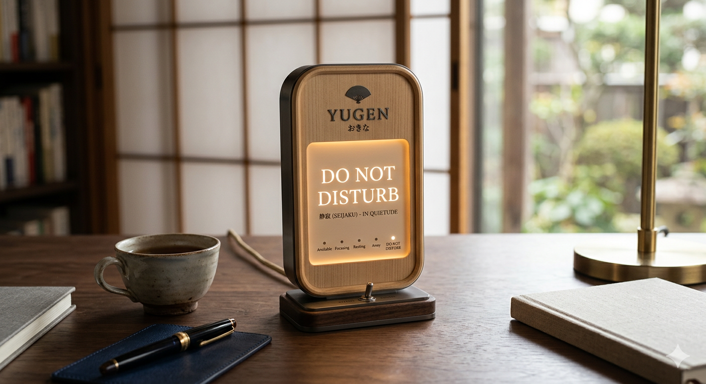

Status Light Object
Do Not Disturb
Do Not Disturb is a premium desktop status indicator shaped by the hospitality spirit of Japanese inns. Combining pale hinoki-inspired wood tones with soft champagne metal and warm paper-like illumination, the object communicates boundaries through grace rather than interruption.
The display interface is intentionally minimal, presenting states such as focus, rest, or do not disturb in a calm and respectful way. Its hidden warm LED lighting ensures the sign remains readable without becoming harsh, making it suitable for both day and evening environments.
More than a practical sign, the piece acts as a gentle ritual object for workspaces. Its balanced proportions and quiet material palette help create a sense of order, courtesy, and emotional composure in the room.
- Material direction: Light hinoki wood tone, brushed champagne metal, warm translucent panel
- Display idea: Focus, rest, do not disturb, quiet modes
- Mood: Omotenashi, calm restraint, soft ritual